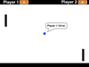

Mathematics
I believe that coding is an amazing tool for giving students the power to be technology creators instead of only consumers. If students are able to gain a basic understanding of several coding concepts they can quickly start to brings their ideas and imagination to life. I envision students combining coding skills with their creativity to demonstrate their understanding of the curricular content being taught in their various subjects. This is a ongoing list of various programs that I have created using Scratch or Python that incorporate various curricular content.
-
Rotating Squares
Mathematics
Scratch
Description: Transformations of 2D shapes can be explored, specifically rotations. An understanding of angles will also be required to ensure that a full 360 degree rotation is made. The program could also be adapted to look at translations and reflections.
-

Pong
Mathematics
Scratch
Description: Students will need to have a strong understanding of various mathematical concepts to create their version of pong. They will need to be confident with cartesian geometry, specifically the coordinate system. Vectors will also be applied to control the balls speed and direction.
-
Creating Geometric Shapes
Mathematics
Python
Description: Students will experiment with creating a variety of functions to draw geometric shapes. The first task is to create separate functions for drawing simple triangles and squares and builds towards creating a single function to draw any n-sided regular polygon.